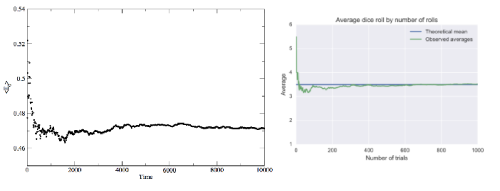
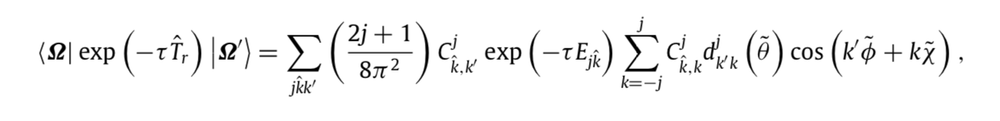
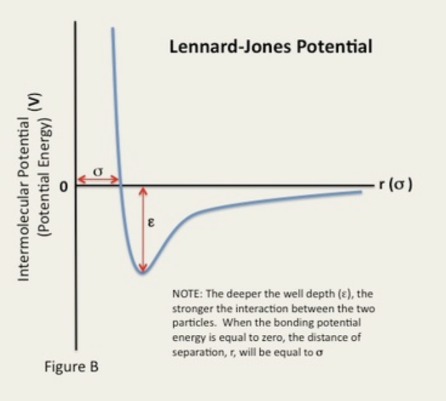
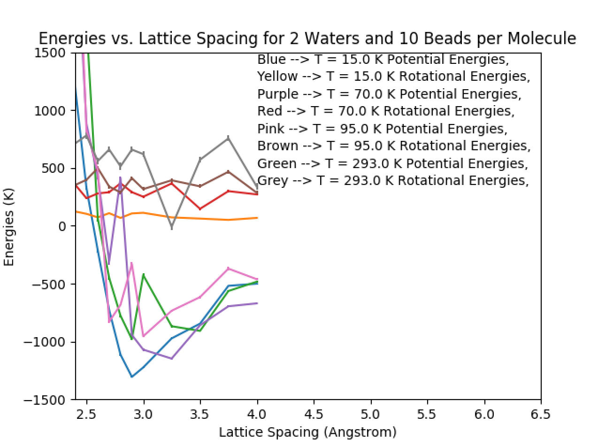
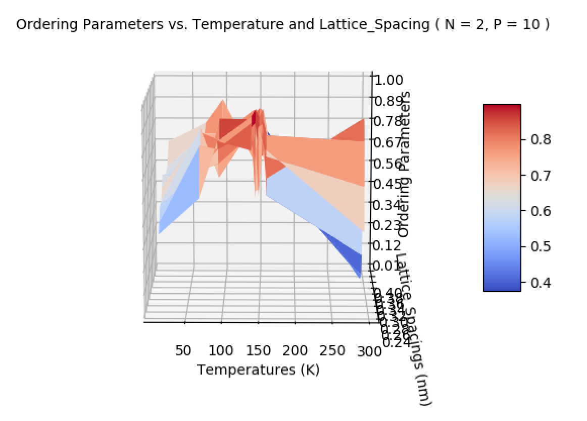
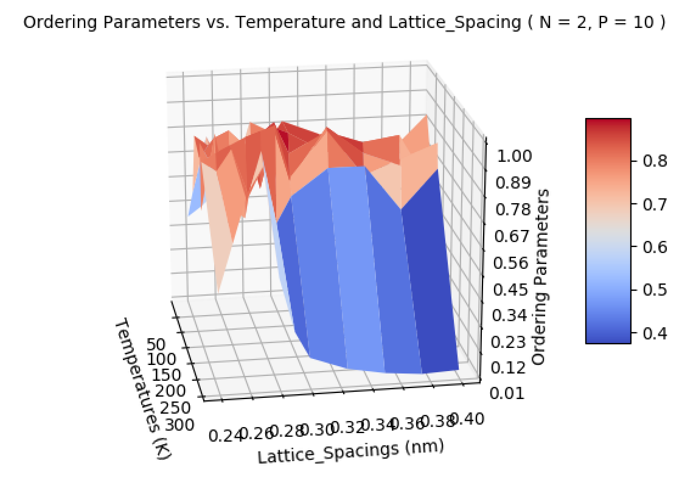

Public edition note
This is an undated historical 3B work-term report. The original used an automatically generated date; no completion date has been inferred. The author’s substantive letter, acknowledgments, contributions, summary, scientific discussion, mathematical expressions, appendices and eleven manually written references are retained. Statements about simulation validation and scientific results are historical claims of the report, not new verification or assurances of correctness.
Administrative student identifiers and postal/contact details have been removed. This standalone article does not distribute the original custom document class. The student work is not public domain, and no license or broader reuse permission is asserted. The template’s author header is not a verified license; the absence of a confidentiality flag does not establish permission to publish or redistribute.
Repeated equation labels have distinct namespaced identifiers. Missing or ambiguous historical references remain visible review notes rather than guessed links. Appendix letters and the original section-prefixed figure and table numbering are explicit in this edition.
Letter of submittal
This report, entitled "Waters in a 1D Carbon Nanotube" was prepared as my 3B Work Report for the University of Waterloo. This report is in fulfillment of the course WKRPT 400. The purpose of this report is to develop and validate a Monte Carlo/Molecular Dynamics simulation software package, specially designed for nanoscale systems, which generates trajectory files based on chosen input parameters and uses them to calculate the time averages of physical properties.
I worked under the Roy group, who works within the physics department of the University of Waterloo, with my employer being Professor Roy. The Roy Group is focused on developing theoretical approaches and numerical algorithms for computer simulations. Professor Roy performs sets of simulations which range from small, low temperature situations such as quantum clusters or quantum fluids where quantum mechanical effects must be taken into account (such as dispersion and quantum statistical mechanics effects), to semi-classical systems where purely classical mechanical implementations fail but approximate quantum treatment is sufficient for accurate results, to larger biochemical systems which are implemented using classical molecular dynamics.
I would like to acknowledge Professor Roy and his team for teaching me several classical and statistical mechanics principles, the principles of PIMC and PIMD, and their implementation into simulation software. I would also like to thank professor Roy for introducing me to the nlogn and graham.computecanada.ca servers. I’d especially like to thank Tapas Sahoo for assisting me with automating my simulation submission process so that I could submit multiple simulations with different parameters simultaneously (temperature, bead number, lattice spacing, etc), and I would like to thank Xichen Lou for assisting me with debugging code and clarifying details of the mechanics that were implemented in the software. I hereby confirm that I have received no further help other than what is mentioned above in writing this report. I also confirm this report has not been previously submitted for academic credit at this or any other academic institution.
Sincerely,
Liam McGrath
Contributions
The team I worked with on this particular project was relatively small and consisted of 3 members; a masters student, Xichen Lou, a postdoctoral fellow, Tapas Sahoo, and the Tier 1 Canada Research Chair in Quantum Molecular Dynamics, Professor Roy. The team members each had backgrounds in theoretical chemistry.
The team’s main goal were to develop and validate a simulation software that implements translation of molecules using PIMD and rotation of molecules using PIMC, and compare the energy outputs from this simulation software to the outputs from fully validated simulator, MoRiBS, which implements both translation and rotation using PIMC. Additionally, we wanted to test the simulation software to determine if it could accurately replicate an observed phase transition in a system consisting of water molecules inside a carbon nanotube, with the radius of the nanotube being such that the water molecules are confined in 1D space.
My tasks consisted of developing and validating a simulation software focused on modelling nano-scale systems. I was responsible for developing an integrator script, which models the dynamics of a system using PIMD and PIMC, and stores positions and velocities and Euler angles for each time step in trajectory. I was responsible for developing analysis scripts, which calculated observables such as energies from trajectory files. I was also responsible for developing consolidator and plotting scripts, which will consolidate outputs for variables of interest so that they can be visually represented as functions of 1 or 2 variables (using plotting scripts), while keeping other variables constant. I was responsible for validating the software by comparing our simulators results with theoretical and experimentally determined results, as well as results from the MoRiBS simulator.
The purpose of this report in relation to my work term is to illustrate how the software developed can accurately model a set of simple systems. With this report, I was able to demonstrate the my ability to apply knowledge attained from my first year physics and third year statistical mechanics courses to develop a simulation which accurately models nano-scale systems. This report has also allowed me to improve my writing skills through practice, and provided a record of my work term experience.
The purpose of the simulator is to model nano-scale systems using computational algorithms derived from physical principles of nano-scale systems. This report will serve as an example for how someone might approach development and validation of software used to simulate a nano-scale system. The requirements outlined in the report are general for all types of simulators, and can be applied to simulations of chemical, biochemical, biological, and economical systems.
Summary
The main purpose of the report is to provide an understanding of the utility of simulators, the trade offs that go into designing simulators, and the requirements a simulation software must fulfill before it be released publicly.
The structure of the report is as follows. Firstly, there will be a general introduction followed by an introduction to theoretical background, which will provide explanations of the governing equations of nano-scale systems and how they are implemented using computer algorithms. Secondly, there will be a description of the architecture of the software which will go over importance of each script in the simulator, and how they are designed to maximize the use-ability of the software. Finally, results generated using the simulator will be discussed, which will illustrate how developers determine the validity of the simulator software, and whether or not it is ready to be released publicly. This report will focus on analyzing outputs from simpler systems.
The main ideas of this report are the theories of PIMD and PIMC, and the reason why these descriptions of nature were chosen to simulate nano-scale systems. The math describing density matricies and the method by which the software calculates energies using density matricies will be covered, along with the Trotter expansion which will outline the importance of how bead numbers model the "quantumness" of a system. The results from simulations will be compared to theoretical and experimentally determined values, as well as , to confirm the validity of the simulator developed and described in this report.
The major conclusions of the report are that the software has been partially validated after sets of simulation results were generated and compared to theoretical and experimental results, as well as results generated from the MoRiBS simulator. These sets simulations include those that implement only translation with no potential, only rotation with no potential, and rotation with a LJ and MBPol potential. It has been concluded that the software is sufficiently usable for users who are familiar with github and Unix. Difficult processes such as submission of multiple simulation, analysis of multiple trajectories, and consolidation of multiple analysis output files has been automated to improve the use-ability of the software.
The major recommendations from this report to future developers are to improve the software by making further improvements to its use-ability, and to validate the simulator further by analyzing energy outputs for systems by simultaneously implementing translation, rotation, and potential energy components and comparing the results to the MoRiBS energy outputs for the same system. Additionally, future users should look for more experimental results that are within the limit of what the software can simulate accurately within a reasonable amount of computation time, and determine if the simulation can replicated their results.
1 Introduction
The field of simulations is said to lie between experimentation and theory, because simulations are themselves interpreted as computational experiments performed using algorithms. These algorithms are designed based on theories of the natural world. The aim of all types of simulation software (simulators) are to replicate the physical/chemical/biological/economical observables seen in the outside world by applying theory using algorithms implemented on a computer. There great utility in computationally replicating a nano-scale system because it is far less expensive to perform experiments using computational simulations than it is to perform the same experiments in a laboratory. The purpose of the software described in this report is to replicate the experimental observables from research papers that study physical properties of 1D systems with small numbers of molecules (i.e. \( N \leq 10 \)). The main problems focused on in the report are the validation of the simulator, the minimization of computational time, and the usability of the software. Computational efficiency, use-ability and accuracy are required before the simulator can effectively be used to replicate nano-scale systems. It is required that the outputs of the simulations are sufficiently close to theoretically and experimentally determined results. Simulations applied using governing equations that describe physical systems generate trajectories as outputs by proposing initial positions and velocities all atoms present in a system, and computing subsequent values using governing equations implemented using computer algorithms. The method by which the software computes physical observables from trajectories is based on statistical mechanics, and so the trajectories are obtained by implementing the translations using PIMD and rotations using PIMC. Molecular dynamics was chosen to model translation because it is easier, and more computationally efficient to implement due to the fact translation in 1D systems can only occur in the positive or negative \( x \) direction. Molecular dynamics applies classical equations of motion (\(\frac{d \vec{x}}{dt} \hspace{0.125cm} = \hspace{0.125cm} \vec{v} \hspace{0.025cm} , \hspace{0.225cm} m \frac{d \vec{v}}{dt} \hspace{0.125cm} = \hspace{0.125cm} \vec{F} \hspace{0.125cm} = \hspace{0.125cm} - \nabla{U} \)) to generate the positions and velocities for each time step to be stored in the trajectory for a particular simulation.
Changes in positions are calculated using velocities, and forces are used to determine the change in velocity between time steps. Forces are calculated using knowledge of the gradients of a the potential energy functions chosen by user. The Langevin equation is used to keep \( \langle v^2 \rangle \) at a certain value such that the equation \( \frac{1}{2} m \langle v^2 \rangle = \frac{3}{2} k_B T \) remains valid for whatever temperature was chosen for the particular simulation [1]. This is done because the software is modelling Canonical systems (which requires a constant number of particles \( N \), volume \( V \), and temperature \( T \)), and because the PIMC rotation implemented requires a constant temperature to be able to easily and efficiently calculate the acceptance criterion. Rotation of molecules were implemented using PIMC’s implementation of the Metropolis Hastings algorithm, with the acceptance criterion is calculated as \( \frac{\rho_{new}}{\rho_{old}} e^{- \tau ( V_{new} - V_{old} )} \), where the density matricies and potential energy are functions of the positions of the atoms and the orientations of the molecules [2]. PIMC is chosen to model rotation because the outputs of the simulation are dependant on temperature, so users may take advantage of this to run simulations at multiple temperatures and determine at what temperature a phase change occurs, which is seen by looking for rapid changes in physical properties with respect to changes in temperature. PIMC is also required to accurately model systems where quantum effects are present, which occurs frequently for small systems of molecules.
1.1 Economic Considerations
Thoroughly tested simulation software can be used in place of real world experiments, which save on both material and human resources, which may be allocated to other experiments. Simulators could also be used to help a research department narrow down what types of systems (molecules/materials) show promising properties, and are worthy fabricating and/or performing experimentation. A well known example of this is DESRES, which simulates protein folding and drug binding to help pharmaceutical industries determine what bio-molecules are worthy of further experimental testing [3]. Simulations can be a cheaper method of performing experiments. This depends mostly on whether or not the computational cost of performing a simulation is greater or less than performing the actual experiments itself. For nano-scale systems, as long as the simulation can be performed in a reasonable amount of time (less than a week), it will cost less than it would to perform the experiment. There is also an inherit trade off between the number of molecules a program can accurately simulate in a reasonable amount of time and the versatility of the software. Simulations with large numbers of molecules tend to have less governing equations. A simulator that models protein dynamics can be performed in a reasonable amount of time as long as quantum effects don’t need to be modelled. Systems which require quantum mechanics for accurate modelling require small numbers of molecules to obtain accurate outputs in a reasonable amount of time because they will be modelled using more governing equations, which will inevitably lead to more computation time per particle. Its worth noting that the simulation must run for a certain number of time steps before sufficiently accurate results can be obtained. According to the law of large numbers, the more time steps taken in a simulation (the more data points gathered), the closer the time average of observables are to the true values (seen in figure Figure 1-1) [4].

2 Background
To fully understand how to go from a Hamiltonian to the (translational, rotational, and potential) energy outputs, its instructive to go over principles of statistical mechanics and PIMC.
2.1 PIMC
The quantum mechanical partition function can be used to calculate all thermodynamic quantities, and it can be defined using a density matrix as;
The trace operator is a sum over the diagonal elements of the density matrix (which we define as \( \hat{\rho} \hspace{0.125cm} \equiv \hspace{0.125cm} e^{-\beta \hat{H}} \)), and it can be calculated as an integral in the continuous coordinate basis \( \ket{q} \);
The Hamiltonian \( \hat{H} \) can be represented generally as having a kinetic term \( \hat{T} \) and a potential term \( \hat{V} \), so the previous formulae can be re-expressed as;
The exponential shown above can be expanded into a product of exponentials so that each operator in the Hamiltonian can be treated independently, as long as the \( \beta \) is sufficiently small (i.e. temperature is sufficiently large \( \beta = \frac{1}{k_B T} \));
The details of this approximation can be found in Appendix C. The Trotter expansion makes this approximation exact. It is defined as;
It is appropriate to define \( \Xi \) so that the mathematics look cleaner and less overwhelming;
using this notation one can more cleanly represent the partition function as;
One can employ the resolution of the identity to this expression after reinterpreting \( \ket{q} \) as \( \ket{q_1}\) to obtain;
which gives the partition function as;
Now, focusing on the potential terms;
Using the equations in \(\ref{wr-eq-15-1}\), the expression \( \bra{q_i} \Omega \ket{q_{i+1}} \) becomes;
The evaluation of the translational partition function is shown in Appendix A. The final form of the partition function is;
It would require infinite computation power to perfectly replicate the quantum system, so instead an approximate partition function is calculated, where the accuracy of the approximation is proportional to the number of beads \( P \) used in the simulation. The approximate partition function is;
When the change in the value of some time averaged observable with respect to increase in bead number is sufficiently small (i.e \( \frac{\langle \partial{\hat{O}} \rangle}{\partial{P}} \leq \Delta_{diff} \)), that bead number is chosen as a simulation parameter in the system. This minimizes the computational time, which is favourable for users because it also minimizes the time cost of the simulation.
2.1.1 Energies
Energies in a statistical mechanical system are traditionally calculated as;
where \( p_i \), is the probability of a particle being in a given quantum state \( \epsilon_{i} \) with degeneracy \( g_{i} \). The probability distribution is normalized by the partition function, and is expressed as;
The partition function in its most basic form has the expression;
where \( \beta \hspace{0.025cm} = \hspace{0.025cm} \frac{1}{k_B T} \). It can be shown that the energy of the system can be calculated using the partition function by taking its negative derivative with respect to \( \beta \) and dividing by \( Z \);
Energies can also be calculated using density matrices and a variable \( \tau \), which is analogous \( \beta \).
2.1.2 Density Matrix Approach to Calculating Energies
Energy outputs can be calculated using density matricies. The density matrices for the system (generally speaking) depend on a partitioned product of density matrices for simpler systems, which are treated independent so that they are more easily and efficiently solvable than they would be as a collection (this is analogous to the partition functions being constructed from partition functions \( Z \hspace{0.025cm} = \hspace{0.025cm} Z_{trans} Z_{rot} Z_{pot} \)). For systems with more than one spacial dimension, one must define the basis vector \( \vec{R} \hspace{0.025cm} = \hspace{0.025cm} (\vec{r};\vec{\Omega}) \hspace{0.025cm} = \hspace{0.025cm} (x,y,z;\phi,\theta,\chi) \), where \( \vec{\Omega} = [\phi,\theta,\chi] \) are Euler angles, explained further in Appendix H. This basis vector is used to calculate the density matrices for a given Hamiltonian;
where the Hamiltonian for the systems being studied are defined as having translational, rotational, and potential energy components.
Density matrices are typically written with two half potential terms, one which operates on bead \( i \), and bead \( (i+1) \) bead \( (i+1) \);
For high temperature systems (small \( \beta \) systems), the exponentials can be expanded into a product of exponentials for each operator in the Hamiltonian (shown in Appendix C), which each independently operate on the basis vector \( \ket{\vec{R}} \);
The bra and ket (basic vectors) act differently on the translational, rotational, and potential terms in each case. The tranlational terms are independant of the Euler angles \( \vec{\Omega} \), and the rotational terms are independant of Cartesian Coordinates \( \vec{r} \), and the potential density matrix will have the full set of basis coordinates \( \vec{R} \). It’s approapriate to express the density matrices as having only their respective basis vectors acting upon them. The previous term can also be represented as;
Performing the Trotter expansion, one can re-express our old result as;
Now notation is important. One can say that;
The operators act independently on the basis vectors (\( \bra{\vec{R}_i} \) and \( \ket{\vec{R}_{i+1}} \)) to give the energy eigenvalues. A proof of this is shown in Appendix D.
Much like how \( E \hspace{0.025cm} = \hspace{0.025cm} - \frac{\partial{\ln{Z}}}{\partial{\beta}} \), a similar expression is true for \( \tau \) when trying to find the partial energy contributions from \( \hat{\rho}_{trans_i}^t \), \( \hat{\rho}_{rot_i}^t \) and \( \hat{\rho}_{pot_i}^t \), where \( i \) and \( t \) are the indices for bead number and time step respectively. Its instructive to name these energies \( \epsilon_{trans_i}^t \), \( \epsilon_{rot_i}^t \), and \( \epsilon_{pot_i}^t \), respectively;
The energy outputs of the simulations are translational energy, rotational energy, potential energy, and the total energy, which are calculated as [1];
2.2 Waters in a Nanotube System
The Hamiltonian used to obtain the results discussed in this report contains rotational kinetic energy and potential energy components, and describes pinned water molecules (asymmetric tops) in a 1D lattice;
The rotational kinetic energy operator is used to calculate the rotational density matrix \( \rho_{rot} \), and the potential energy operator is used to calculate the potential energy density matrix \( \rho_{pot} \). The translation density matrix \( \rho_{trans} \) is calculated based on the separation distance between the \( i-1^{th} \) and \( i+1^{th} \) beads.
Generally, the Hamiltonian used this particular simulation software contains translational and rotational kinetic energy and potential energy components, and describes free moving water molecules (asymmetric tops) in a 1D chain;
This implementation of the software has yet to have its energy outputs tested against the thoroughly tested benchmark software, MoRiBS.
2.2.1 Rotational Density Matrix
The kinetic energy operator for water molecules is what is known as an asymmetric top can be written as;
The rotational density matrix is difficult and lengthy to evaluate analytically. Details of how this is derived can be found in Appendix E. The equation for the rotational density matrix is shown in Figure 2-2 [5]. The derivation for this formulae from the Hamiltonian above is shown in Appendix B.

2.2.2 Potential Energy Density Matricies
The potential energy operator can be one of many different potentials, depending on what type of system the user of the simulation software wants to simulate. The potentials featured in this software consist of a coulomb potential, a LJ potential, a dipole-dipole potential, and an empty potential which is used when the user wants to study systems with purely kinetic energy. These potential are all explained further in Appendix F, and Appendix G. There is also a MBPol potential which is the most accurate, and it is the potential used alongside the LJ potential to obtain some of the outputs discussed in the results section of this report.
2.2.2.1 LJ Potential
The LJ potential is used when the user wants to model potential interactions between purely neutral molecules as well as any potential interaction that fails have any form of repulsive forces between atoms or molecules. The LJ potential is mathematically represented as;
This potential is also know as the 12-6 potential, called this because there is an attractive term represented as \( \frac{1}{r^6} \) and a repulsive term represented as \( \frac{1}{r^{12}} \) [6]. The repulsive 12 potential acts as a hard wall, having little effect (relative to the 6 potential) when molecules are far away, and having a strong effect when molecules are closer together. The minimum energy \( -\epsilon \) occurs at \( 2^{\frac{1}{6}} \sigma \), represented in Figure 2-3.

In cases where the LJ potential is used, superimposed on other potentials, if \( \epsilon \) is sufficiently small, then the potential can be considered weak compared to all other potentials (except in the hard wall cases where two molecules come very close together) and will barely contribute to the output.
2.2.2.2 MBPol Potential
The most sophisticed and accurate potential is a "black box code" named MBPol (many-body polarizable) which calculates to potential energy between many molecules, taking into account the polarizability of molecules. This code was written by another individual who is not a direct member of the Roy research group. It is useful when studying the energy and ordering parameters outputs from simulations, which can be useful for determining phase changes in systems. This is because accurate results are required, and they cannot necessarily be generated using simpler, less exact potentials such as the dipole-dipole interaction potential.
3 Simulation Software
The simulation software that was been developed utilizes a software package known as MMTK (created by Konrad Hinsen) to store the trajectories [7]. The benefits of using MMTK to do this is that MMTK includes the ability to visualize molecular motion using a VMD package which requires MMTK trajectories as inputs. Simulations of this system are performed using the PIMC and PIMD sampling techniques, which were outlined in the background.
PIMD is used to translate the molecules according to the equation of motion \( \vec{F} = -\nabla{U} \), where we know \( \vec{F} = \frac{d \vec{p}}{dt} \), and \( d \vec{p} = m d \vec{v} \), so one can isolate the change in velocity between time steps as \( d \vec{v} = \vec{v}_{i+1} - \vec{v}_i = - \frac{dt}{m} \nabla{U} \) and update the velocity accordingly (i.e. \( v_{i+1} = v_i + d \vec{v} \). The velocities are adjusted at the end of molecular dynamics simulation loop using the Langevin equation, which is used to keep \( \langle v^2 \rangle \) at a certain value such that the equation \( \frac{1}{2} m \langle v^2 \rangle = \frac{3}{2} k_B T \) remains valid for whatever temperature was chosen for the particular simulation [1].
The Metropolis-Hastings algorithm PIMC is used for the rotation of water molecules around their centre of mass [2]. This is done by randomly perturbing the values of each of the water’s Euler angles from their previous state, and accepting proposed rotations based on if the acceptance criterion \( \frac{\rho_{new}}{\rho_{old}} e^{- \tau ( V_{new} - V_{old} )} \) is greater than a random number generated between 0 and 1 [2]. If this proposed Euler angles are accepted, they are stored in the trajectory, otherwise the previous values are stored in the trajectory in their place. This sampling process is chosen with the intent of modelling phase transitions in systems with small numbers of molecules. This is because the acceptance criterion, and therefore the outputs, are dependant on the temperature chosen for the simulation (\( \tau = \frac{1}{P k_B T} \)).
While this implementation seems simple in concept, the drive for efficiency makes what could be a simple set of nested for loops in a python script a more challenging task, involving using cython coding language for the integrator, then a compiler to convert the integrator script into .so files (machine code files) for maximum efficiency. This slows down the debugging process slightly but speeds up the rate at which we can perform simulation steps 10 fold. The potential files are written in c++ for efficiency, and are also compiled into .so files using compiler scripts for efficiency purposes.
A simulation software package consists of a Unix directory that contains several different file types that each serve a purpose that is integral to the function and efficiency of the software as a whole. These scripts serve a variety of functions, but generally the scripts are simulation (integrator script) or potential scripts, or they are used to either submit simulations, analyze trajectories outputted from simulation scripts. The simulation script is known as the integrator script, named so because PIMD and PIMC essentially calculates observables using integrals (or averages) to calculate partition functions using density matrices, which are then used to calculate time average energy outputs as well as other observables. The scripts that used for submitting simulations for sets of inputs parameters (sets of temperature, bead number, lattice spacing, and number of molecules) are known as the submitter scripts and simstart scripts. The scripts used to analyse and plot the trajectories of simulations are the analysis scripts, consolidator scripts, and plotter scripts.
3.1 The Submit and Start Scripts
The submit script, submitscript.py, is used to perform multiple simulations which use the same potential energies as inputs, but vary input parameters such as temperature, bead number, lattice spacing, and number of particles. The submit script simulates all variations of simulations by looping (using nested loops) through lists of the input parameters and submitting simulations using the values in these lists the user chose as input arguments, which are submitted to the simstart.py script. Each of the combinations of simulations are submitted to a server (nlogn or compute canada) as submitscript.py loops through the lists of input values. This script takes several input arguments including, but not limited to density matrix files, rotational energy files, rotational energy squared files, number of particles, lattice spacing, and integers which indicate whether a potential energy script is to be used in the simstart.py script. Density matrix files, rotational energy files, and rotational energy squared files (i.e. \( T = 155.0 K \) and \( P = 8 \) would look like; H2O_T155P6.rho, H2O_T155P6.eng, H2O_T155P6.esq) are obtained by running a asymrho.f code (which calculates the values derived in Appendix B), and using temperature and bead number as input arguments. These input parameters are incorporated into the names of their respective output files. This implementation was chosen to increase the usability of the software. Users can easy perform multiple simulations simultaneously by simply submitting lists of each of the input parameters as arguments to be submitted to the submitscript.py script. The order of the arguments is specified in README file, and the submitterfile.py is designed to automatically chose the proper density matrix type files (stored in a separate directory) from temperature and bead inputs chosen by the user, which to be submitted alongside their respective lattice spacing and number of particles input arguments.
The simstart.py script is what creates and fills the trajectories for the molecules present in the simulation. It starts simulations and outputs trajectory files which are used themselves as input arguments for analysis scripts. Analysis scripts calculate output files containing a particular simulation observable such as translational energy, rotational energy, potential energy, ordering parameters, etc. The simstart.py script starts by importing integrator scripts and the set of potential energy scripts chosen by the user using input arguments. It then initializes particle trajectories and simulation parameters using information gathered from input arguments (such as temperature, bead number, lattice spacing, etc). Afterwards, the simstart.py script defines the initial conditions for the molecules before calling the integrator script to start the simulation loop. Before the main simulation loop is run, 300 equilibration steps are performed so that the trajectory file doesn’t include the first 300 positions, velocities, and Euler angles. This equilibration process is performed such the outputted trajectory files to be analyzed will have more accurate observable files outputted, than if the first 300 positions, velocities, and Euler angles were included in the trajectory file. The energy output files are calculated by averaging over all time steps. The initial 300 time step values would likely deviate greatly from the equilibrium trajectory values, so including them in the time average would likely skew the average and increase the deviation of the observable.
3.2 The Integrator and Potentials Scripts
This script contains the main simulation loop and several functions that are called on during the main simulation loop. The main loop is executed \( N_{timesteps} \) number of times, and translational steps are performed each time during this loop (in the cases they are performed at all). Monte Carlo rotation steps are performed about once every 50 molecular dynamics steps, which was chosen because this matches the implementation of the MoRiBS simulator.
In the Monte Carlo rotation loop, there is a loop for the number of molecules and the number of beads. New Euler angles for \( \phi^{t+1}_i \) and \( \chi^{t+1}_i \) are proposed by adding \( 2 \pi \cdot \delta \) times a random number between -1 and 1 to \( \phi^{t}_i \) and \( \chi^{t}_i \), and the new Euler angle \( \theta^{t+1}_i \) is proposed by adding \( \pi \cdot \delta \) times a random number between -1 and 1 to \( \theta^{t}_i \). The value of \( \delta \) is chosen such that the probability of accepting newly proposed Euler angle values is between 0.3 and 0.5. If statements are placed to push values proposed outside of the ranges \( \phi \epsilon [0 , 2 \pi] \), \( \theta \epsilon [0 , \pi] \), and \( \chi \epsilon [0 , 2 \pi] \), back inside the range. The new Euler angles for the loop bead are used alongside the Euler angles for the \( (i+1)^{th} \) and \( (i-1)^{th} \) beads to calculate the rotation matrices. These matrices are used to calculate the relative Euler angles between beads, which are also used to calculate; \( \epsilon_{rot}^{t+1} \), and \( ( \epsilon_{rot}^{t+1} )^2 \).
These values are inefficient to calculate them each time, so instead a function is used to obtain a previously calculated value for the values above, which has been stored in a specially marked file. The rotatioanl density matrix, energy, and energy squared files are used as an input arguments prior to submitting the simulation. There are 23 588 101 values stored in each of these files, which correspond to the \( 361 \times 181 \times 361 \) different integer values in the range of \( \phi \), \( \theta \), and \( \chi\). Once the builtin cython function \( int( \phi + 1 ) \), \( int( \theta + 1 ) \), \( int( \chi + 1 ) \) is applied to relative Euler Angles, the rotational density matrix, energy, and energy squared can be retrieved and used in the rotational part of the simulation loop. The \( \rho_{rot}^{t+1} \) value is used to calculate the \( \rho_{new} \) value which is needed in the equation for the acceptance criterion (\( \frac{\rho_{new}}{\rho_{old}} e^{- \tau ( V_{new} - V_{old} )} \)). Similarily, \( \rho_{old} \) is calculated using \( \phi_{i} \), \( \theta_{i} \), and \( \chi_{i} \). If the proposed Euler angles are accepted, \( \epsilon_{rot}^{t+1} \), and \( ( \epsilon_{rot}^{t+1} )^2 \) are stored in the trajectory, otherwise \( \epsilon_{rot}^{t} \), and \( ( \epsilon_{rot}^{t} )^2 \) are stored in its place.
\( V_{new} \) and \( V_{old} \) are calculated by calling potential scripts using all the atoms positions, and the molecules orientation as inputs. Potential scripts contain methods that use equations to calculate potential energy, and the gradient of potential energy using all the positions of the atoms in the simulation as input arguments. The potential energy is used for the PIMC part of the integrator, and the gradients are used for the PIMD part.
3.3 Analysis, Consolidator and Plotter Scripts
Two specifically designed analysis scripts were used to calculate the results displayed in the following section from trajectories generated from simulations performed in the
H20Rigid3DRotor_PINormalModeIntegrator.pyx integrator script. One was designed for calculating energy outputs trajectories, and the other used for calculating ordering parameter outputs from trajectories. Energy outputs could be the total energy, rotational energy, transnational energy, potential energy, etc. The trajectories submitted as arguments to the analysis scripts will have the temperature, bead number, lattice spacing, and number of particles in their file name. An example of this is; N2H20T95.0P8R0.4Dip.nc, which contains the specific temperature, lattice spacing, number of molecules, and bead number (\( T = 95.0 K \), \( R = 0.4 nm \), \( N = 2 \), \( P = 8 \)). The analysis script extracts these parameters from the file name, and incorporates all these parameters into the output file name along with the name of the observable being calculated from the trajectory. The output file will just contain one value, the output from analysis of the trajectory.
Consolidator scripts consolidate several outputs into one consolidated script, keeping two or three of the parameters (temperature, bead number, lattice spacing, and number of particles) constant. The loop goes through files in order of lowest to highest parameter size, which keeps the values sorted in the final consolidated script so that the plotter doesn’t have to perform a sorting proceedure. Implementing a sorting procedure in the plotter scripts which would cost the user valuable time. They gather all outputs for parameters that aren’t kept constant into one file which is given a file name based the output of interest, and the two (or three) the parameters that were kept constant. An example of this is for the three parameter case is energy-T155.0nmolecules2nbeads10.file, which has all the energy outputs for all the different simulations with different lattice spacings that have that specific temperature, number of molecules, and bead number respectively (\( T = 155.0 K \), \( N = 2 \), \( P = 10 \)).
There are two types of plotter scripts. One is named plotter.py, and it is used to output 2D plots, given a set of files as input arguments that want to be plotted by the user. These types of input arguments were consolidated keeping three variables constant. The other script is named surfaceplotter.py, and it outputs a 3D surface plot given 1 file as an input argument. These types of input arguments were consolidated keeping two variables constant. Results from the next sections were all generated using one of these two plotting scripts.
4 Simulation Results and Discussion
The simulation software for the asymmetric top was tested by comparing the energy outputs to a similar software named MoRiBS, which implements both translation and rotation using Monte Carlo methods. The MoRiBS Monte Carlo simulator has been validated by confirming its energy outputs match theoretical calculations and experimental data, so it is used as a benchmark to validate this simulator. Once a set of validation tests are performed on the simulator (which is currently still being developed), sufficient confidence will be built with the software, and it can be advertised to potential users. The first steps towards validating the simulator are confirming that the translational and rotational energy outputs are close to their theoretical values for the asymmetric top. This has been completed, and the results will be discussed. The simulator was also used to replicate experimental data by creating and analyzing the outputs of the energies and ordering parameters of the system as a functions of temperature, bead number, lattice spacing, and number of particles. 2D and 3D plots were used to visually represent the data to aid in interpreting the results.
The translational energy outputs were obtained by running the simulation for a system with no potential using temperatures \( T = [10.0 K, 20.0 K, 30.0 K, 50.0 K, 100.0 K] \) (as well as \( N = [1] \)), \( P = [1] \), \( R = [0.3 nm] \). The rotational energy outputs were obtained by running the simulation for a system with no potential using temperatures \( T = [10.0 K, 20.0 K, 30.0 K, 50.0 K] \). The input parameters chosen to analyze energy outputs and ordering parameters were combinations of the temperatures \( T = [15.0 K, 70.0 K, 95.0 K, 140.0 K, 145.0 K, 150.0 K, 155.0 K, 160.0 K, 293.0 K] \), bead numbers \( P = [2, 4, 6, 8, 10] \), lattice spacings \( R = [2.4 nm, 2.55 nm, 2.7 nm, 2.85 nm, 3.0 nm, 3.25 nm, 3.5 nm, 3.75 nm, 4.0 nm] \), and number of molecules \( N = [2, 4, 6, 8, 10] \).
4.1 Simulation Validation
4.1.1 Comparison of Translational Energy Outputs
When validating whether the software is modelling translation properly, one may simply compare the translational energy outputs to the theoretical value which is proportionate to \( \frac{3}{2} N k_B T \). The units of the energy are in Kelvin rather than Joules or electron volts (where \( 1 K \hspace{0.125cm} = \hspace{0.125cm} \frac{1}{1.38 \times 10^{-23}} J \hspace{0.125cm} = \hspace{0.125cm} \frac{1.6 \times 10^{-19}}{1.38 \times 10^{-23}} eV \)). The translational energy outputs are in good agreement with the theoretical values for all simulated temperatures, so the simulator has passed this validation test. The MMTK simulator results and theoretical energies are compared in Table 4-1.
| Temperature | Theoretical Value | Etrans MMTK Value | Error |
|---|---|---|---|
| 10.0 K | 15.0 K | 15.148 K | 0.020 K |
| 20.0 K | 30.0 K | 30.104 K | 0.043 K |
| 30.0 K | 45.0 K | 44.068 K | 0.063 K |
| 50.0 K | 75.0 K | 74.359 K | 0.106 K |
| 100.0 K | 150.0 K | 147.904 | 0.214 K |
4.1.2 Comparison of Rotational Energy Values
The asymmetric top rotational energy can has been calculated theoretically using the asymmetric top eigenvalues for water molecules. These values was used to validate the MoRiBS software [5]. The simulator being developed used the simulator MoRiBS as a benchmark, and compared its rotational energy outputs to theirs. The rotational energy outputs from MMTK are in good agreement with the rotational energy outputs from MoRiBS for all simulation temperatures, so the simulator has passed this validation test. The simulation was ran for 200 000 times steps and 2 000 000 steps, and the results from MMTKcand MoRiBS are compared in Figure 4-4.

4.2 Energy Outputs
The expectation value of the distance between water molecules occurs when the molecules are at their minimum potential energy. When water is in a solid state, they form a lattice where their center of masses are some distance apart from each other. It has been stated in literature that the expectation value of the distance between water molecules is \( 2.85 nm \), which was calculated from first principles by assuming the ice has a density of \( 1 \frac{g}{cm} \) and a molar mass of \( \frac{1 g}{18.02 \frac{g}{mol}} \) [8]. Figure 4-5 displays all the rotational and potential energy outputs from simulations at temperatures \( T = [15.0 K, 70.0 K, 95.0 K, 293.0 K] \), bead numbers \( P = [10] \), lattice spacings \( R = [2.4 nm, 2.55 nm, 2.7 nm, 2.85 nm, 3.0 nm, 3.25 nm, 3.5 nm, 3.75 nm, 4.0 nm] \), and number of molecules \( N = [2] \). The minimum potential energy for these systems seem to lie around \( R = 2.85 nm \), which is in good agreement with the literature result. Most of the rotational energy outputs seem to increase linearly with temperature (for the same lattice spacing), much like the rotational energy results from MoRiBS. The rotational energy outputs seem to show minor deviation in value with respect to lattice spacing, with increasing deviation from increasing temperature.

4.3 Ordering Parameter Outputs
The ordering parameter is defined as the expectation value of the absolute value of the dot product between the axis of the nanotube vector and the direction of the dipole of the molecule vector (i.e. \( \langle \Theta \rangle \hspace{0.125cm} = \hspace{0.125cm} \sum_{i = 1}^{P} \sum_{j = 1}^{N} \sum_{i = k}^{N_{timesteps}} \frac{| \vec{e}_{nanotube} \cdot \vec{e}_{dipole} |_{ijk}}{P N N_{timesteps}} \hspace{0.125cm} \)). Its purpose is to determine how ordered the system is, where a large change in the value of the ordering parameter with respect to temperature or lattice spacing could be characterized as a phase change in a system. A similar system was analyzed experimentally, and a spectral shift occurred around \( T = 150.0 K \), indicating a phase change [9]. The submitscript.py script was used to run combinations of simulations using LJ and MBPol potentials, and varying input parameters such temperatures, bead numbers, lattice spacing’s and number of particles. The trajectories were analyzed and ordering parameter files where outputted. The outputted files were consolidated into separate files that would each keep number of beads and number of particles constant. The bead number was chosen because it gave a sufficiently good interpretation of the quantum effects of water molecules while not being too computationally expensive. The software’s surface plotting feature has be used create Figure 4-6. Looking at the figure, a phase transition seems to occur around \( T = 140.0 - 160.0 K \), which is in good agreement with the literature results. From the lattice spacing side of the surface plot shown in Figure 4-7), one may observe a peak at 0.285 nm, and a rapid drop off while trending towards 0.4 nm.


It is worth noting that the trend was very similar for systems with larger number of particles (i.e. \( N = [4, 6, 8, 10] \)) but different for smaller number of beads (i.e. combinations of \( P = [2, 4, 6, 8] \).
Conclusions
The development of the simulation software is ongoing. The more the system is tested, the more it proves what it can reliably model, and the more its developers will learn what it can’t. The utility of the software is associated with the number of situations the system can accurately model, and the accuracy of each of those simulations. The utility also depends on the software use-ability. The software has been tested in a variety of situations, and has proven to match theoretical and experimental results in each of these situations.
README files were added so that future users and developers could better use or develop the simulator in the future. The software was set up so that users could use the README files as guides, so it has a fairly decent use-ability. If users want study the simulation of asymmetric top system with a particular potential energy function, but varying input parameters, they can use README files find out how to perfrom multiple simulations by submitting lists of input parameters to submitscript.py. The outputs of the simulations are contained in files stored in a separate directory, and the output files can be consolidated using consolidator files in order to prepare data for line or surface plots. This also increases the use-ability of the software because new users don’t have to gather results themselves.The software is accessible on github, and it can be effectively used by users who can navigate through Unix directories, use github commands to clone the software, and read README files.
The translational and rotational energy outputs were close to correct theoretical values for the set of temperatures tested. This validated the modelling of basic dynamics of the system. The energy and ordering parameter outputs were in good agreement with what was observed in experiments. The waters rotational energy seemed to increase appropriately with respect to temperature, with a variation with respect to lattice spacing that increased with respect to temperature. The waters potential energy seemed to be minimum at 0.285 nm, which seemed to agree with experimental findings and theoretical calculations [8]. The potential energy with respect to lattice spacing curves seems to vary more for higher temperatures, with the minimum energy being around 0.285 nm for the lowest temperature case. The ordering parameter plots seemed to show a phase change around 150.0 K which was in good correspondence with experimental observation [9]. The magnitude of the ordering parameter seemed to peak at a lattice spacing of 0.285 nm, and decline slowly afterwards, which also seemed to agree with experimental findings and theoretical calculations [8].
Recommendations
The major recommendations from this report are make improvements to the software by increasing its use-ability, and utility. The utility can be improved by simulating systems that implement translation, rotation, and potential energy components simultaneously, and comparing the results to the MoRiBS energy outputs for the same system. This will further validate the software. Additionally, future users should look for more experimental results that are within the limit of what the software can simulate accurately (within a reasonable amount of computation time), and determine if the simulation can replicate the literature results.
The use-ability of the software is sufficient for future developers and users to use it, however there are improvements to be made. It is recommended that future developers adapt the README files so their more understandable, if they are not currently understandable. Future developers should ensure that there are no errors within any of the scripts for all possible test case, and they should improve on the efficiency of the scripts to minimize the computational cost of the software.
The translational and rotational energy outputs from the software are sufficiently close to the theoretical results, however, the translational, rotational, and potential energy outputs still must be tested with a potential energy function present. This testing will involve a comparison between all of the energy outputs with the energy outputs of an equivalent system simulated in MoRiBS.
The system has already been tested against theoretically and experimentally determined results, its minimum energy and maximum ordering parameter occurs when the the particles are placed 0.285 nm apart from each other. The more the software can replicate theoretical and experimental results, the more valid it appears to its users. It is recommended that future users should look for more experimental results that are within the limit of what the software can simulate accurately, and determine if the simulation can replicate their results.
Glossary
- WKRPT 400
-
Work-term report
- PIMD
-
Path Integral Molecular Dynamics
- PIMC
-
Path Integral Monte Carlo
- MMTK
-
Molecular Modelling Tool Kit
- MBPol
-
Many Body Polarizable
- VMD
-
Visual Molecular Dynamics
- LJ
-
Lennard Jones
- BFF
-
Body Fixed Frame
- MoRiBS
-
Molecular Rotation in Bosonic Solvents
References
[1] C. Ing, K. Hinsen, J. Yang, T. Zeng, H. Li and P. Roy, "A path-integral Langevin equation treatment of low-temperature doped helium clusters", The Journal of Chemical Physics, vol. 136, no. 22, p. 224309, 2012. Available: 10.1063/1.4726507.
[2] “Metropolis Hastings algorithm,” Wikipedia, 29-Dec-2018. [Online].
Available: https://en.wikipedia.org/wiki/Metropolis–Hastings_algorithm. [Accessed: 07-Jan-2019].
[3] "D. E. Shaw Research", Deshawresearch.com, 2019. [Online]. Available: https://www.deshawresearch.com/. [Accessed: 09- Jan- 2019].
[4] "Law of large numbers | statistics", Encyclopedia Britannica, 2019. [Online]. Available: https://www.britannica.com/science/law-of-large-numbers. [Accessed: 08- Jan- 2019].
[5] T. Zeng, N. Blinov, G. Guillon, H. Li, K. Bishop and P. Roy, "MoRiBS-PIMC: A program to simulate molecular rotors in bosonic solvents using path-integral Monte Carlo", Computer Physics Communications, vol. 204, pp. 170-188, 2016. Available: 10.1016/j.cpc.2016.02.025.
[6] Libretexts, “Lennard-Jones Potential,” Chemistry LibreTexts, 26-Nov-2018. [Online]. Available: https://chem.libretexts.org/Bookshelves/Physical_and_Theoretical_Chemistry_Textbook_Maps/Supplemental_Modules_(Physical_and_Theoretical_Chemistry)/Physical_Properties_of_Matter/Atomic_and_Molecular_Properties/Intermolecular_Forces/Specific_Interactions/Lennard-Jones_Potential. [Accessed: 07-Jan-2019].
[7] “The Molecular Modeling Toolkit,” Atom. [Online]. Available: http://dirac.cnrs-orleans.fr/MMTK.html. [Accessed: 07-Jan-2019].
[8] G. Bell, "Statistical mechanics of water: lattice model with directed bonding", Journal of Physics C: Solid State Physics, vol. 5, no. 9, pp. 889-905, 1972. Available: 10.1088/0022-3719/5/9/004.
[9] X. Ma, S. Cambré, W. Wenseleers, S. Doorn and H. Htoon, "Quasiphase Transition in a Single File of Water Molecules Encapsulated in (6,5) Carbon Nanotubes Observed by Temperature-Dependent Photoluminescence Spectroscopy", Physical Review Letters, vol. 118, no. 2, 2017. Available: 10.1103/physrevlett.118.027402.
[10] "3.37. Wigner D Function — Theoretical Physics Reference 0.5 documentation", Theoretical-physics.net, 2019. [Online]. Available: https://www.theoretical-physics.net/dev/math/wigner.html. [Accessed: 09- Jan- 2019].
[11] M. Ragab* and K. Wong**, "ROTATION WITHIN CAMERA PROJECTION MATRIX USING EULER ANGLES, QUATERNIONS, AND ANGLE-AXES", International Journal of Robotics and Automation, vol. 24, no. 4, 2009. Available: 10.2316/journal.206.2009.4.206-3174.
Appendix A: Evaluation of the Translation Density Matrix
The kinetic energy term can be evaluated by inserting momentum basis states using the resolution of the identity (i.e. \( 1 \hspace{0.025cm} = \hspace{0.025cm} \int d^n p \ket{p} \bra{p} \)), but some background is required on the inner product of coordinate and momentum states;
The statement;
must be true such that;
remains valid. Note \( \langle p | q' \rangle \hspace{0.025cm} = \hspace{0.025cm} \langle q' | p \rangle^{*} \hspace{0.025cm} = \hspace{0.025cm} \frac{1}{(2 \pi \hbar)^{\frac{n}{2}}} e^{\frac{- i p q'}{\hbar}} \), so equation \(\ref{wr-eq-19-1}\) now becomes;
Now, continuing with the process of solving \( \bra{q_i} e^{ - \frac{ \beta p^2}{2 m P}} \ket{q_{i+1}} \);
Note that;
Note that this has the form of a Gaussian integral, which has the solution;
Noting that in this scenario, \( a \hspace{0.025cm} = \hspace{0.025cm} \frac{\beta}{2 m P} \) and \( b \hspace{0.025cm} = \hspace{0.025cm} \frac{i (q_i - q_{i + 1})}{\hbar} \), so;
If we state that \( \kappa \hspace{0.025cm} = \hspace{0.025cm} \frac{m P}{2 \pi \hbar^2 \beta} \) (note \( \kappa \hspace{0.025cm} \equiv \hspace{0.025cm} \Big[ \frac{kg \cdot \frac{kg m^2}{s^2}}{\frac{kg^2 m^4}{s^4} \cdot s^2} \Big] \hspace{0.025cm} \equiv \hspace{0.025cm} \Big[ \frac{1}{m^2} \Big] \) ), then the above expression becomes;
Using this result we can write Z as;
Noting that \( V(q_i) \) is always counted twice in the sum \( \sum_{i = 1}^{P} \Big( V(q_i) + V(q_{i + 1}) \Big) \) because \( V(q_1) \hspace{0.025cm} = \hspace{0.025cm} V(q_{i + 1}) \), we can rewrite the partition function as;
Appendix B: Rotational Density Matrix Derivation
The density matrix for an individual free rotor can be evaluated using the following expression:
Proceeding by expanding the eigenfunctions of \( | \Omega_{i+1} \rangle \) in a basis set of eigenfunctions of the asymmetric top \( | JM\hat{K} \rangle \);
Since \( | JM\hat{K} \rangle \) are eigenfunctions of the Schrodinger equation for the asymetric top, so it follows that;
where \( E_{\hat{K}}^{(JM)} \) are the rotational energy eigenvalues of the asymmetric top. Using this as constant allows us to rearrange it to obtain;
The choice for the BFF Euler angles (see Appendix B) is arbitrary, so for convenience, the body fixed frame coordinates are chosen to be such that \( \vec{\omega} = ( \phi_i , \theta_{i} , \chi_i ) = ( 0 , 0 , 0 ) \) which leads to;
and so tilde’s are added to remind ourselves that we are in the space fixed frame for the \( | \Omega_{i+1} \rangle \) bead;
The next step in solving this expression, the asymmetric top eigenfunctions (i.e. \( | JM\hat{K} \rangle \) ) are expanded in a basis set formed by the eigenfunctions of the symmetric top (i.e. \( | JMK \rangle \) );
This gives our new expression for \( \rho^{rot_{i, i+1}} ( \tau ) \) as;
The eigenvalues of the symmetric top are given by;
where \( d_{MK}^{J} (\theta ) \) is Wigner’s reduced d-matrix. Noting \( d_{MK}^{J} ( 0 ) = \delta_{MK} \), we obtain the solutions to the wavefunctions above;
Substituting these back into the rotational density matrix equations one will obtain;
Taking the real parts of the complex exponentials it resembles Figure 2-2 [5]. The energy eigenvalues of this sytem are calculated by using [unresolved historical reference: eq:59] along with \( \rho_{rot}^{i, i+1} ( \tau ) \) to obtain the energies for that bead, and time step, then averaging the values over all beads and time steps;
The Wigner small d function can be found in literature \(.^{10} \) It is defined as;
With all this information it is possible to calculate the rotational energy for a system as a function of temperature. \( \tau \hspace{0.125cm} = \hspace{0.125cm} \frac{1}{P k_B T} \).
Appendix C: Proof of Approximation
Starting from;
Performing a Taylor series expansion to the RHS here we obtain;
and we neglect terms \( \mathcal{O}(\beta^3) \) or greater because a large \( T \) means a small \( \beta \). For smaller temperature cases we require a mathematical tool known as the Trotter expansion, finishing off this expansion;
which can be computed exactly using a Trotter expansion;
This formalism is exact for all values of \( \beta \).
Appendix D: Energy Eigenvalues from Operators Proof
The goal of this section is to show how to go from the operator notation of the density matrices to the energy eigenvalue notation of the density matrices;
One can start by noting that the second terms in the Taylor Series expansion of the exponential are much larger than the third terms from the Taylor expansion.
and so it is a valid assumption to state that
and operating on the ket, then having the bra operate on the resulting term we obtain;
and these operators transform into their respective energy eigenvalue representation;
which can be re-represented exactly in an exponential form as;
Appendix E: Simplification of Asymmetric Top Hamiltonian
For linear rotors, the Laplacian in spherical coordinates (used for angular momentum operators) is;
and note that \( \mu_a r^2_0 \hspace{0.025cm} = \hspace{0.025cm} I_a \), equation \(\ref{wr-eq-62-1}\) can be rewritten as;
Defining rotational constants A, B, and C as;
one can more cleanly express the kinetic part of the Hamiltonian as;
Appendix F: Coulomb Potential
The coulomb potential is used when the user wants to model the potential interaction between molecules using their partial charges, and calculating the potential interaction between all the partial charges while neglecting the "self interactions" of the molecules partial charges with each other. This is mathematically represented as;
Appendix G: Dipole-Dipole Interaction Potential
The dipole-dipole interaction potential is to be used when the user wants to implement a simulation when they know dipoles will be sufficiently far apart, and possibly also when they want to studying the ordering parameters of water molecules without knowledge of the exact distributions of the orientation of the dipoles.
The dipoles must be sufficiently far apart because the derivation of this (simpler) form of the dipole-dipole interaction potential assumes that the length of the dipole is much smaller than the distance between dipoles. For this reason, this potential is particularly useful when the dipoles are pinned some relatively large distance away from each other such that this condition is met.
Appendix H: Euler angles for Rotation Matrix Functions
Start by defining the rotation matrix using Zares definitions of the Euler angles \(.^{11} \) The full rotation matrix is the product of simpler unitary matricies, making the product of the rotation matricies \( \vec{\vec{R}} ( \vec{\Phi} ) \) also unitary.
A property of unitary matricies is that the transpose of a unitary matrix is equivalent to the inverse of the same matrix. It can be seen that;
Evaluating the \( \vec{\vec{R}}_{\phi} \vec{\vec{R}}_{\phi}^{-1} \) terms one will see;
Where the identity matrix \( \vec{\vec{I}} \) is defined as;
The same can be proved for \( \vec{\vec{R}}_{\theta} \vec{\vec{R}}_{\theta}^{-1} \) and \( \vec{\vec{R}}_{\chi} \vec{\vec{R}}_{\chi}^{-1} \)
Evaluating the \( \vec{\vec{R}}_{\phi} \vec{\vec{R}}_{\phi}^{-1} \) terms one will see;
Evaluating the \( \vec{\vec{R}}_{\chi} \vec{\vec{R}}_{\chi}^{-1} \) terms one will see;
Which proves that;
These concepts are used to find the relative Euler angles between beads in order to calculate the rotational energy value for that bead in the integrator script.